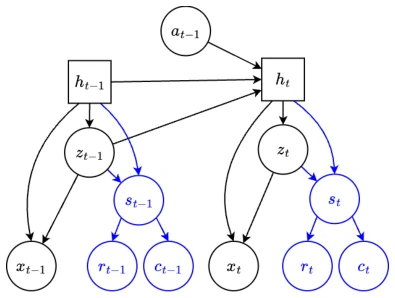
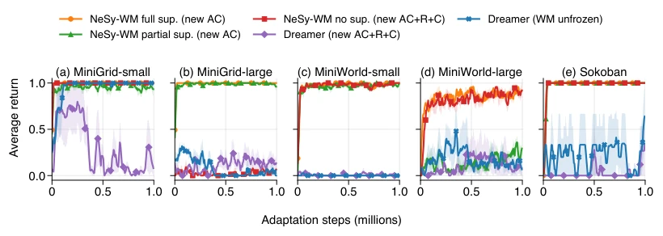
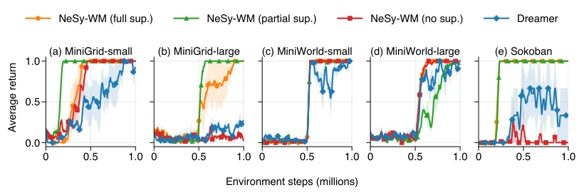

This paper adds a "neuro-symbolic" filter to DreamerV3, attempting to address the pain points of world model task transfer. The highlight lies in decoupling reward prediction from black-box latent variables and binding it to interpretable symbolic attributes, achieving true zero-shot task adaptation—as long as the new task can be described with the same symbols, one can directly switch reward function planning without retraining. However, there are also many drawbacks: this approach essentially trades prior knowledge for flexibility; if the new task exceeds the preset symbol vocabulary, the model is blind. Moreover, symbol alignment relies entirely on supervision or luck; without supervision, it is easy to learn incorrectly. Overall, this is a pragmatic attempt to trade structured assumptions for sample efficiency, far from general intelligence, but in specific domains it is indeed more reliable than pure neural networks, especially those navigation or Sokoban tasks with clear reward logic.
研究动机Motivation
基于模型强化学习（MBRL）的世界模型（如 DreamerV3）通常学习任务相关的潜变量表示，导致奖励预测器与训练任务强绑定（Hafner et al. 2025）。当环境动力学不变但奖励函数改变时（如导航目标位置变化），现有模型无法直接复用，往往需要重新训练或回放缓冲区重标记（Sekar et al. 2020）。奖励函数通常编码用户意图（如到达目标），是高层语义抽象，而纯神经网络模型缺乏可解释接口来直接指定新奖励。这导致模型难以在共享动力学下实现零样本任务迁移。此外，现有神经符号方法多关注动力学建模而非奖励适应。本文旨在通过神经符号方法，将奖励预测解耦于潜动力学，利用显式符号接口实现新任务适应，无需额外环境交互。
World models based on model-based reinforcement learning (MBRL) (such as DreamerV3) typically learn task-related latent variable representations, leading to reward predictors being strongly bound to the training task (Hafner et al. 2025). When environment dynamics remain unchanged but the reward function changes (e.g., navigation target position changes), existing models cannot be directly reused, often requiring retraining or replay buffer relabeling (Sekar et al. 2020). Reward functions typically encode user intent (e.g., reaching the goal) and are high-level semantic abstractions, whereas pure neural network models lack interpretable interfaces to directly specify new rewards. This leads to models struggling to achieve zero-shot task transfer under shared dynamics. Furthermore, existing neuro-symbolic methods mostly focus on dynamics modeling rather than reward adaptation. This paper aims to use neuro-symbolic methods to decouple reward prediction from latent dynamics, utilizing explicit symbolic interfaces to achieve new task adaptation without additional environment interaction.
The core is Neurosymbolic World Models (NeSy-WMs), based on the RSSM architecture (Hafner et al. 2019). The pipeline is divided into training and testing: during training, the model learns latent states from observations while predicting symbol attribute distributions. The reward predictor no longer directly outputs a scalar, but first predicts the probability distribution of symbol states $s_t$, then combines with the symbol reward function $p_{sym}(r_t|s_t)$ (via marginalization formula 1 or 2). This allows replacing $p_{sym}$ during testing without retraining latent dynamics. Training loss includes standard reconstruction, dynamics, prediction losses, and optional symbol supervision losses (fully supervised, partially supervised, unsupervised). Testing supports two adaptations: (O1) Pure Planning (MCTS), (O2) Imagination Finetuning. The symbol predictor is differentiable, supporting end-to-end training. In this way, the model decouples environment dynamics from task goals, making symbol states the bottleneck for reward prediction, thereby supporting flexible task definitions.

Figure 1: Overview of NeSy-WMs. The symbolic- bottlenecked reward and continue predictors are shown in blue; the rest follows the RSSM structure of (Hafner et al. 2019). At test time, new reward and continue functions can be defined over the same symbols to enable zero-shot plan- ning or imagination training of a new actor-critic.
Evaluated on MiniGrid, MiniWorld, and Sokoban. Baseline is DreamerV3. Metrics include training sample efficiency, MCTS planning success rate, imagination finetuning return. Results show that NeSy-WM has significantly better sample efficiency than DreamerV3 under symbol supervision, especially in sparse reward environments. Zero-shot planning performs near perfect simulators on simple/medium tasks, but hard tasks remain limited. In zero-shot imagination finetuning, NeSy-WM adapts to new tasks without re-labeling buffers, whereas DreamerV3 requires re-labeling or unfreezing the model, with poorer results. Ablation shows symbol supervision is crucial for stability; performance drops without supervision but still outperforms the Dreamer baseline. Experiments prove that under shared dynamics, neuro-symbolic structures can effectively improve the generalization ability of task transfer.

Figure 4: Imagination finetuning results. Curves show the average return across three seeds and their standard error. Adaptation is entirely offline; during finetuning, we periodically evaluate the policy in the test environment solely to measure performance.
其他图片Other Figures

Figure 3: Training results. Curves show the average return across three seeds and their standard error. Both NeSy-WMs and Dreamer start by an exploration phase in the MiniWorld environments and in MiniGrid-large (see supplementary material).